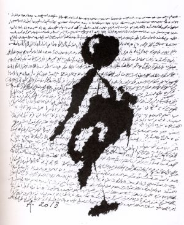

Su última obra, Zócalo, publicada en francés antes que en árabe, aparecerá en unos días en español traducida por Clara Janés. Esas prosas poéticas nacieron en un viaje a México durante la primavera de hace dos años, pero se hace difícil leer páginas tan llenas de dioses, sacrificios y sangre sin pensar en otra primavera, la árabe, aquel dominó de revueltas que empezaron admirando al mundo en Túnez a finales de 2010 et, desbordado por los extremismos, ha terminando espantándolo en Irak y Siria a manos del llamado Estado Islámico. En ese tiempo, Adonis hizo dos cosas que le ganaron un alud de críticas: sostener que la primavera árabe no era una revolución y escribir, dans 2011, una carta abierta al presidente sirio, Bachar El Asad, pidiéndole que dialogara con la oposición. “Tibio” fue lo más suave que le dijeron. Más tarde escribió reclamando que dimitiera por la represión desencadenada bajo su mando. “Lo que yo pretendía con aquella carta”, explica el escritor, “era evitar la destrucción del país y que cambiara un régimen fundado en un golpe de Estado y en el partido único. Desgraciadamente los políticos no escuchan a los poetas”.
—¿Por qué no era una revolución la primavera árabe? —Porque una revolución debe tener un discurso, y no lo había: los opositores jamás hablaron de laicidad, de liberación de la mujer, de cambiar la ley coránica. ¿Qué revolución es esa? Solo querían cambiar de régimen, y cambiar de régimen no sirve de nada cuando permanece la misma mentalidad. Los árabes tienen que hacer su revolución interior, c'est-à-dire, repensar la religión a la luz de la modernidad y separar lo religioso de lo cultural, político y social para que se convierta en una creencia individual. En Europa se hizo esa revolución y se separó el Estado de la Iglesia, que en la Edad Media era peor que los musulmanes de hoy. Yo no tengo nada contra la religión como fe individual, pero estoy contra una religión institucionalizada e impuesta a toda una sociedad. Hay que anular las diferencias entre confesiones. El reto es, par exemple, que en Egipto los cristianos coptos tengan los mismos derechos que los musulmanes. —¿Estamos mejor o peor que antes? —No está mal Túnez, un país más homogéneo, sin minorías, dicho sea de paso. Allí hay cierto diálogo. Pero se han destruido países enteros: Libia, Syrie, Irak. ¿Para qué? Para nada, para resucitar viejas nociones religiosas. ¡Se vuelven a usar palabras de hace quince siglos! Se ha producido una regresión vergonzosa, humillante. El islam actual es una religión sin cultura. No hay más que ritos y leyes. No hay un solo pensador. Y cuando surge alguno, se le rechaza. Adonis dice desconfiar de “toda revuelta que salga de una mezquita con proclamas políticas”, pero extiende su desconfianza a las soluciones salidas de los despachos de Estados Unidos o de Europa. ¿Occidente no se ha interesado por la oposición laica? “Los políticos occidentales, no Occidente, no quiero generalizar”, responde. “Desgraciadamente, los políticos no se interesan de verdad por los árabes, los ven como fuente de riqueza —el petróleo— y como espacio estratégico. No se interesan por las fuerzas progresistas aunque sean, est vrai, poco numerosas. Lo que hacen las intervenciones extranjeras es revitalizar las fuerzas oscurantistas en el mundo árabe. Lo emponzoñan todo. Cuando uno compra y arma a unos supuestos combatientes, a una supuesta oposición, inventa un ejército de mercenarios. El Estado Islámico es una creación de Arabia Saudí y Estados Unidos. Ahora tienen que combatir a aquellos a los que armaron ellos mismos”. Como en el caso de Egipto, dice resignado, en Siria toca elegir el mal menor y combatir al Estado Islámico. Partidario acérrimo de la laicidad, más de una vez ha expresado sus dudas hacia eso que suele llamarse islam moderado: “No existe. Es una expresión política. Lo que hay son musulmanes moderados. Y son pocos. Hay un islam y una interpretación que es ideológica. En eso es como los otros monoteísmos: hay un profeta que es el último y que transmite verdades últimas. Dios lo ha dicho todo y el hombre debe obedecer. En el monoteísmo el otro no existe. No se le reconoce como parte de la búsqueda de la verdad porque la verdad ya la tengo yo. La base de nuestros problemas no es el islam como religión, es la visión monoteísta del mundo. Por eso es necesario separar la religión del Estado. No habrá democracia mientras eso no cambie. No hablo de democracia como sistema perfecto, sino como reconocimiento del otro. Y de reconocimiento no como tolerancia, porque la tolerancia esconde un aspecto racista: yo te tolero porque tengo la verdad y te dejo hablar. El ser humano exige la igualdad. El monoteísmo es antidemocrático”.
“La base de nuestros problemas no es el islam como religión, es la visión monoteísta del mundo.
El monoteísmo es antidemocrático”
Autor de una veintena de libros de poemas y de varios ensayos de literatura y política, Adonis tiene tanta fe en la poesía como poca en la religión. Una y otra, dit, están en los antípodas porque “la gran poesía siempre es laica. La poesía es la pluralidad, la unidad de los contrarios. Es lo opuesto a la religión incluso en términos históricos: en nuestra historia de musulmanes no ha habido ni un solo gran poeta que fuera creyente. Nunca”. ¿Ni los místicos? “Son un caso aparte”, responde un autor que ha dedicado a las relaciones entre sufismo y surrealismo una obra de referencia. “Cambiaron la noción de realidad y de Dios. Por eso se les rechazó. Para el monoteísmo Dios es una fuerza que dirige el mundo desde el exterior, para el misticismo es inmanente, forma parte del mundo. Dios es el mundo”. —¿Usted cree en Dios? —No. Creo que en el mundo hay algo misterioso y que hay que estar atentos a ese misterio. De ahí la actitud de cuestionarse las cosas. Llame a eso como quiera, pero no soy creyente. Soy arreligioso. La religión es una ideología y toda ideología es falsa.


—¿Y recuerda cuando era creyente? —Sí. Mi padre lo era. Era agricultor, pero conocía bien la cultura clásica. Nunca me dijo haz esto, esto no lo hagas. Siempre me decía: “Decidir, hijo mío, es fácil. Todo lo que quiero de ti es que piensen bien, que vuelvas a pensar bien y que luego decidas”. —¿Y su madre? —Era analfabeta. Era pura naturaleza, como un árbol, una fuente, una estrella. —¿En su casa se seguía la ley islámica? —No. La ley estaba, pero yo nací en una comunidad chií, no suní. Era más abierta. La comprensión individual tenía su espacio. Femmes, par exemple, no usaban velo. —¿Usted está contra el velo? —Totalmente. —¿Es una imposición o un derecho? —No se trata de defender una cosa u otra, sino de principios. Uno puede incluso defender el mal. Si una mujer insiste en llevar el velo, que lo lleve, pero hay que decir que está mal. La belleza del ser humano no debe velarse. Cuenta Adonis que hasta su madre terminó llamándole así: Adonis. Su nombre civil es Alí Áhmed Said Ésber. No ha faltado quien diga que eligió un seudónimo “blasfemo”, por pagano, para provocar —“hay ignorantes en todas partes”—, pero la verdad es que acababa de leer la historia de ese mito griego cuando buscaba un alias para enviar sus poemas a una revista que siempre se los rechazaba. Acertó. La audacia parece haber marcado su vida. Né à 1930 Al Qassabin, una aldea del norte de Siria, avec 13 años recitó un poema de su cosecha delante del presidente del país, de gira por la comarca. Cuando este le ofreció una recompensa, el muchacho respondió: “Ir a la escuela”. Siete décadas después, el escritor lo cuenta como si le hubiera pasado a otro, aunque recuerda con admiración la buena memoria de aquel niño: “Me sabía la poesía árabe completa, el Corán, tous les. ¿Ahora? Se me ha ido olvidando. Hay que olvidar para crear. Uno de los problemas de los árabes es que viven en su memoria, no en la vida”. Fiel a su carácter inquisitivo, el escritor aprovecha cualquier momento para criticar los males de su pueblo. Aunque la misma noción de pueblo le espanta: “Es una idea política interesada. Dentro de un pueblo hay miles. Un pueblo nunca permanece unido más que por ideas superficiales”. ¿Y la identidad? “Según la noción al uso, la identidad es una pertenencia en la que es central el pasado: de una familia, de una raza, de un pueblo… Para mí lo esencial es el individuo, aunque el individuo no se entiende sin el otro. No podemos imaginar a un ser que nace solo y vive solo. La identidad es una creación perpetua, una apertura, no una adquisición. No se hereda porque el ser humano es una proyección hacia el futuro: crea su identidad al crear su obra”. Adonis afirma sin dudar que no tiene miedo de decir lo que dice, pero reconoce que lo tuvo. Por eso se marchó de Siria en 1956, después de pasar un año en la cárcel por criticar al régimen. “Pasaba como con el monoteísmo: un partido único [el Baaz] con una ideología laica, pero racista. Según la Constitución, el presidente de la República siria debe ser musulmán. Un partido verdaderamente laico no hace algo así”. Al salir de la cárcel se marchó a Líbano. Sin papeles, convertido en apátrida. En el país vecino había una rama de su familia —“en el fondo son el mismo país”— y no le fue difícil obtener la nacionalidad libanesa, que todavía conserva. Pasó veinte años sin poder volver a su pueblo. Por eso dice que nació tres veces: en Al Qassabin, en Beirut y en París. En Líbano nacieron sus dos hijas y él se convirtió en uno de los modernizadores de la poesía árabe abriéndola a la vanguardia universal y a formas como el poema en prosa y el verso libre.
Pistas para llegar a Adonis
Zócalo. Traducción de Clara Janés. Vaso Roto. San Pedro Garza García (Mexique) / Madrid (Espagne), 2014. El próximo 6 de octubre se publica en español este último libro del poeta sirio. Lo escribió en 2012 a raíz de un viaje a México. El pasado prehispánico y figuras como Trotsky y Octavio Paz atraviesan un conjunto de poemas en prosa que a veces transportan al autor a su propio pasado mediterráneo. Árbol de Oriente. Antología poética, 1957-2007. Edición de Federico Arbós. Visor. Madrid, 2010. Esta antología es la mejor puerta de entrada el universo de Adonis. Contiene una buena muestra de toda su obra y un completísimo prólogo de Arbós. “Bajo mis penas tengo una ciudad”, dice una línea de ‘Este es mi nombre’. Bajo las 450 páginas de este libro hay un mundo entero. Epitafio para Nueva York. Traducción de Federico Arbós. Nórdica. Madrid, 2014. Publicado originalmente en 1971, otro viaje, esta vez a EEUU, dio lugar a un homenaje a Lorca y Walt Whitman. También a una dura crítica al militarismo estadounidense y al capitalismo simbolizado por Wall Street. En esta edición se le han sumado los poemas largos ‘Garganta de piel roja’ y ‘Paseo por Harlem’, escritos en los años 90. Historia desgarrándose en cuerpo de mujer. Traducción de Rosa Isabel Martínez Lillo. Huerga y Fierro. Madrid, 2012. Poema polifónico que reelabora la leyenda de Agar, la esclava con la que Abraham tuvo a Ismael, padre mítico de los árabes. Madre e hijo terminaron expulsados de la casa del profeta. En sus versos, Adonis reivindica la dignidad de una mujer que se niega a ser “mitad útero y coito. / El resto, perfidia”. Sufismo y surrealismo.Traducción de José Miguel Puerta Vílchez. Ediciones del Oriente y del Mediterráneo. Guadarrama, 2008. ¿Qué pasaría si leyésemos a Rimbaud como si se tratara de un sufí oriental? Algo así hace Adonis, que subraya la revolución que, trascendiendo la mera literatura, supuso para nuestra visión de la realidad la obra de poetas y místicos.
Después de publicar títulos como Canciones de Mihyar el de Damasco o Libro de las huidas y mudanzas por los climas del día y de la noche, la invasión israelí de Líbano dio lugar al descarnado Libro del asedio. Dans 1985 se marchó a París: “No había nada que hacer en Beirut. Todo estaba destruido, incluida la universidad en la que era profesor de literatura”. En Francia ha seguido escribiendo poemarios ya clásicos en la literatura contemporánea como el monumental El Libro —la Ilíada de las letras árabes para algunos— o Historia que se desgarra en un cuerpo de mujer, una versión feminista, erótica y crítica de la leyenda de Agar, concubina de Abraham y madre de Ismael, padre mítico de los musulmanes. “Sí, es una versión antirreligiosa”, reconoce Adonis. “Un profeta que destierra a su mujer y a su hijo y los abandona en el desierto. ¡Un profeta! ¿Nadie se pregunta por qué?”. Los integristas piden recurrentemente que se quemen sus libros. La última vez, hace unos meses en Argelia. Él lo sabe pero no calla: “No creo hacer mal a nadie. Expreso mis ideas. Si no, siento que no existo”. No duda siquiera cuando se le recuerda que se empieza quemando libros y se termina quemando escritores. O intentando quemarlos. Baste pensar en la fetua contra Salman Rushdie: “Lo de Rushdie fue más algo político que religioso, causado por una crítica suya a Jomeini. Su libro reproducía algo ya dicho. Mucha gente ha hablado más radicalmente que él y no ha pasado nada. ¿Que la mayoría de los que querían matarlo no lo habían leído? Eso es la ignorancia. Por eso digo que hoy el islam es una religión sin cultura. Rushdie tenía todo el derecho a hacer lo que hizo”. ¿Y los caricaturistas que dibujaron a Mahoma? “También. Pero hay que saber con quién se discute. No se habla igual a un niño que a un profesor. Los periodistas tienen derecho a dibujar lo que quieran, pero deberían tratar de no humillar a la gente. Si uno busca la verdad, debe estar a la altura de la verdad. Insultar es fácil, pero no sirve para nada”. En unos días se concederá el Premio Nobel. Adonis figura en todas las quinielas desde hace años, mais, como era de esperar, él dice no pensar en eso. ¿En qué piensa? “En cómo escribir poesía. Y en cómo poetizar el mundo. Por eso hago collages, para prolongar la poetización del mundo. Sin poesía, el mundo se muere de frío, de cerrazón. Los tres pilares del universo son el amor, la amistad y la poesía. El resto es comercio”. Sabe de qué habla: vive rodeado de multinacionales. El barrio le gusta. El mundo, algo menos.
Una entrevista de Javier Rodríguez Marcos.